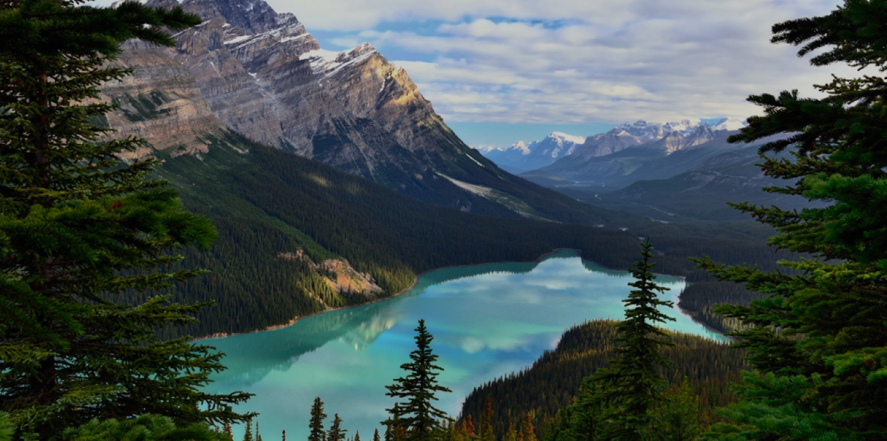

 1.png)
Cozy hotel Char, located in a unique place called Char gorge located in Naryn. The hotel has 12 rooms: Single, Double, Family rooms. There is also a cafe and a sauna. In summer you can also stay in our yurt camp. Each room has a private bathroom.
Show moreOur yurt camp is locally a family yurt camp in the famous alpine lake Son-Kul. Our yurt camp is located on the southern shore of the lake.
Show more Yurt Camp Baiysh
Yurt Camp Baiysh
All rooms have access to a shared bathroom. Located in Kochkor, TRAVELER GUEST HOUSE has a garden. It offers family rooms and a sun terrace. It offers a 24-hour front desk, airport shuttle service, a shared lounge and free Wi-Fi. Guests can enjoy activities in and around Kohkor, like cycling.
Show moreHotel "Khan Tengri" is an excellent choice for guests of Naryn, the family atmosphere and many useful services will make your stay here very pleasant. Relax in rooms with a work desk and a mosquito net. You can also stay connected during your stay as Khan Tengri Hotel offers guests free wifi.
Show more Han-Tengri
Han-Tengri
Services offered: smoking areas, room service, laundry, high-speed internet access, car parking, equipped shared kitchen. It is always happy to receive foreign tourists here, the staff speaks Russian and English.
Show moreGuest House Intourist is located in Naryn. Other services and amenities include room service, valet parking and free WiFi throughout the property. Guests have access to a 24-hour
Show more